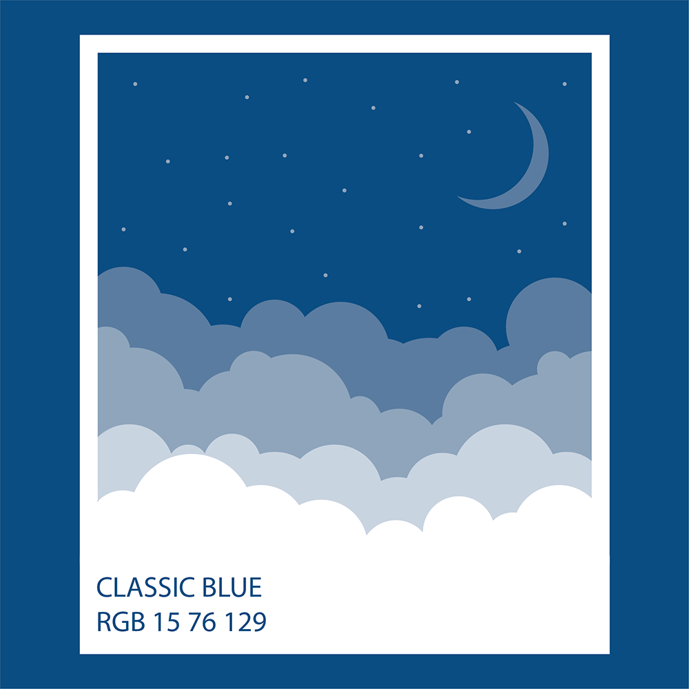
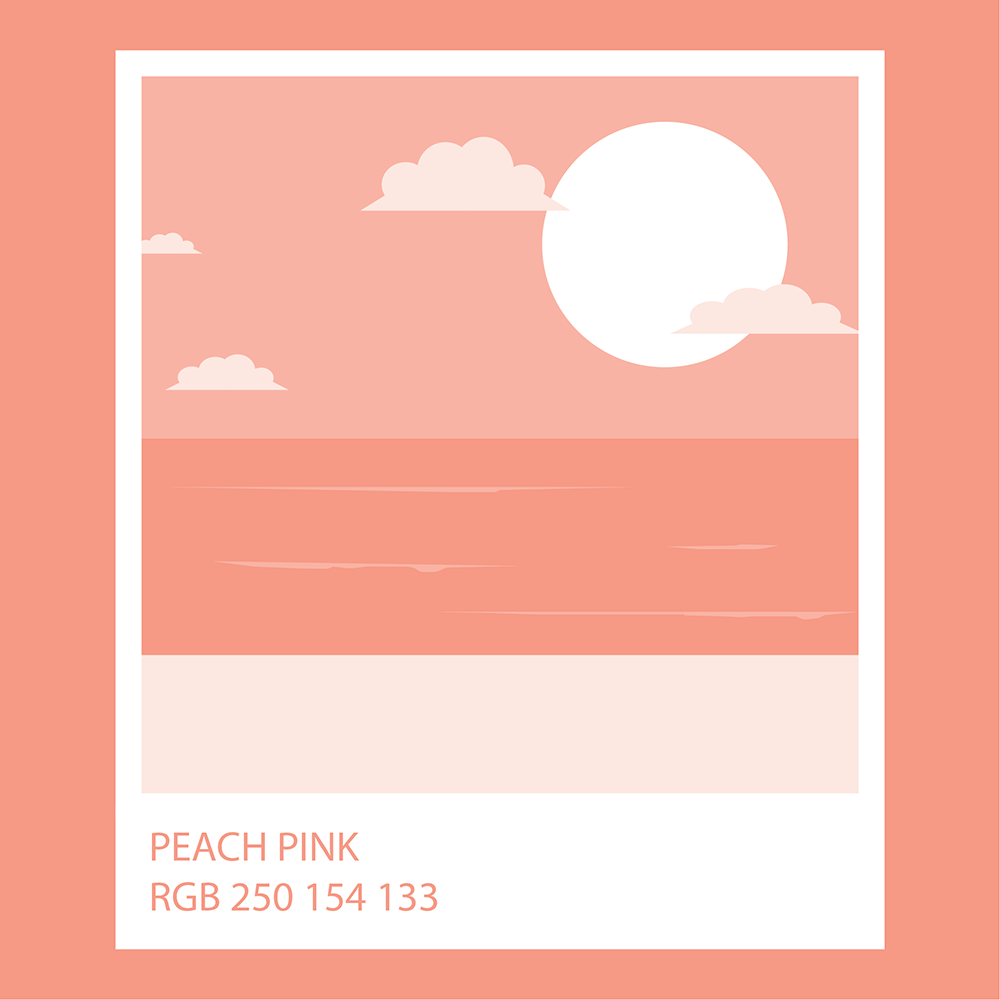

1 / 6

Pantone Classic Blue
2 / 6
Pantone Spectra Yellow
3 / 6

Pantone Cornflower
4 / 6
Pantone Lilas
5 / 6

Pantone Peach Pink
6 / 6
Pantone Bright Chartreuse
Below are just a few in a series of illustrations I completed for a personal project. Each illustration used only a single pantone color.